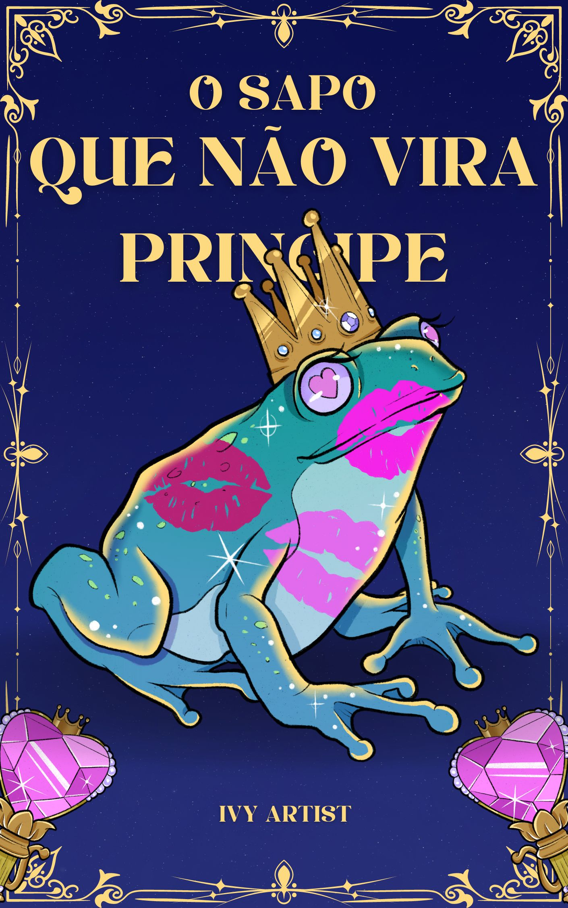

Os Segredos do Mar

Resumo do Livro
"O Sapo que Não Vira Príncipe" é um romance que desafia as convenções dos contos de fadas e apresenta uma visão autêntica e crua do amor. A história segue Odessa, uma jovem que, ao contrário dos romances idealizados das histórias tradicionais, embarca em um relacionamento real, repleto de desafios e complexidades.
Odessa é uma mulher que, após uma série de experiências amorosas decepcionantes, acredita ter encontrado o verdadeiro amor em um homem que parece ter tudo o que ela sempre sonhou. No entanto, o que parecia um conto de fadas perfeito rapidamente revela-se uma jornada de desavenças, desentendimentos e mistérios.
O romance entre Odessa e seu parceiro não é livre de conflitos; pelo contrário, é marcado por momentos de tensão, desentendimentos e impasses. Eles enfrentam dificuldades que testam sua relação e revelam a verdadeira natureza do amor. Odessa descobre que um relacionamento pode se lindo e sincero, mesmo quando não é perfeito e não segue um roteiro idealizado.
Através de suas vivências, o livro mostra que o amor verdadeiro não se encaixa em um molde idealizado. Não é necessário que o parceiro seja perfeito ou que o relacionamento seja livre de problemas para que seja significativo e profundo. "O Sapo que Não Vira Príncipe" explora a beleza e a autenticidade de um amor que, embora repleto de imperfeições, é genuíno e transformador.
Este romance oferece uma reflexão sobre a verdadeira natureza do amor e dos relacionamentos, desafiando os clichês dos contos de fadas e celebrando a complexidade e a beleza de uma conexão humana real e imperfeita.
Gênero
Indice
- O começo de tudo
- um dia depois do outro
- meu para sempre começa aqui
- Meu principe encantado
- O inicio de um grande amor
- Além de tudo que sempre sonhei
- O principe era um sapo
- O "Para sempre" chegou ao fim
- A dor de amar alguém
- Nem todos os sapos viram principes
- O conflito entre espectativa e realidade
- redescobrindo o amor
- O amor além do canto de fadas
- E no fim, meu amor ainda tem um "para sempre"
Preço do livro
120,00
O Sapo que não vira principe
Saiba mais!
Saiba Mais sobre a Artista
 Instagram
Instagram
 facebook
facebook
 youtube
youtube
Minhas obras: